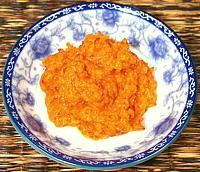

 |
Hot Sour Curry PasteThailand | ||||
| Makes: Effort: Sched: DoAhead: |
3/4 cup ** 30 min Best |
This Thai curry paste is fairly hot but not sour. It gets it's name from use in various hot-sour soups. It is relatively perishable but will keep refrigerated for a week or so and can be frozen for months. | |||
|
|
3 5 1-3/4 1 1 1 |
oz oz oz cl t t |
Shrimp Chili, Red (1) Shallots Garlic Salt Shrimp paste (2) |
|